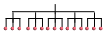

[Home]
Table of contents
Before investing time to learn a new language a natural
question is: Why should we care to learn it?
Since we need an answer to this before starting to learn
the language, the answer has to be in terms of general concepts
that we already know.
The discussion that follows is much like discussing the need
for loops before learning one's first programming language, or
understanding the concept of object orientedness before learning
one's first OOP language. The discussion will necessarily involve
some hand waving, as we cannot give examples requiring
syntactic details yet to be learned.
Many modern languages like R, Matlab, Python (with numpy) allow
working with arrays as a
single object. Thus, they will allow syntax
like sin(x) to find sine of all numbers in an
array. Such implicit loops are handy. However, they may not be
nested. For instance, if we have a matrix, and we want to find
sum of each row, then there is no obvious way to do this. Some
languages provide cumbersome partial solution for this
like apply(mat,1,sum). However, such solutions do
not scale well for higher dimensional arrays.
J provides a way to nest implicit loops. This, in my opinion, is the
single most strong point of J. We shall see the details soon. But
first let's learn about the second reason why one should care for J.
The functional programming paradigm has been around for a long
time, and is gaining popularity fast. In a functional programming language functions are handled
much like variables, they may be created on the fly during
run-time, passed as arguments into other
functions, and returned from a
function.
Most functional languages, however, fall short in one respect. While
they allow the user to combine functions in arbitrary ways, they
hardly provide any ready-made standard operator for functions.
Even basic function operators like composition or
function addition are sadly missing.
J provides not only these standard operators, but also some new
ones which prove quite useful.
So now you have some idea about what J has in store for you. The
next question is: How to avail these?
J uses multidimensional arrays. A scalar is a 0-dimensional
array, vector 1-dimensional, matrix 2-dimensional and so on. It
becomes difficult to visualize higher dimensional arrays if we
continue to use a rectangular layout. It will help to
switch to a tree layout, where a 0-dimensional array is just the
root node, a 1-dimensional one is a tree of depth 1:
and a 2-dimensional array is a tree of depth 2:
|  |
| A matrix is a list of rows |
Thus, when we have a 1-dimensional array
$$
x = (x_1,...,x_n),
$$
and we want to write $f(x)$ to mean
$$
f(x) = (f(x_1),...,f(x_n)),
$$
we are basically applying $f$ not to the entire tree
directly, but to the leaf nodes separately, and then collating
the results.
Well, J allows a generalization of this.
When we
want to apply a function $f$ to a tree $x$, we are
allowed to specify the level at which we want $f$ to
applied. Suppose we have the following $x:$
If we say apply $f$ at level 0, then will be applied
separately at each leaf node and results collated. If we want to
apply $f$ at level 1, then $f$ is applied separately to
the subtrees circled in red below:
Similarly, applying $f$ at level 2 will require
invoking $f$ only one per circled subtree below:
If we apply $f$ at level 3 (or more), then $f$ is
applied only once for the entire tree.
Here is a concrete (albeit useless) example to keep in
mind. Suppose that $x$ is a list of $5$
matrices of size $3\times3.$ Thus, $x$ is a 3-dimensional array of size $5\times3\times 3.$
You also have three functions: "det" is the determinant
function, "sum" is a function to sum a list of numbers, and
"square" to square a number.
If you want to square all the entries of all the matrices, you'll
apply "square" to $x$ at level 0.
To find sums of all row sums for all the matrices, you'll apply
"sum" to $x$ at level 1.
If you
want to find determinant of all the matrices, then you'll need to
apply "det" to $x$ at level $2.$
Now, the output of $f$ may itself be a tree. So if the
effect to $f$ is to produce the purple tree from a green tree:
then applying $f$ at level $m$ to the following tree
would produce
In the examples so far, we are counting the levels bottom up. It
is possible to count top down as well. Then we use negative
numbers. If we write level $-1,$ that would mean
applying $f$ to all the subtrees one level below the root
node. If we want to apply $f$ to the entire tree in one go,
we specify depth $\infty.$
As you can possibly guess, J is markedly different from other
languages. To express its ideas, J needs its own
terminology. What we are calling the level is
called rank in J. Unfortunately, the number of levels
in a tree is also called by the same name. So we have rank of a
tree, as well as rank of a function application. All functions
also have a default rank of application (i.e., if you do not
specify the rank explicitly, the function gets applied with this
default rank). This further confuses beginners who begin thinking
that ranks are an integral part of a function (like dimension of
its domain).
When we specify the rank while applying a function, the argument
tree is split up into an upper and a lower part. The upper part
(which is again a tree) is called the frame of the
original tree for that rank. The lower part consists of some
identically shaped subtrees, each of which is called
a cell of the tree at that rank.
Rank of a function appication is merely a clever shortcut to
denote nested implicit loops. However, as in all interpreted
languages, loops are expensive in J. The rank notation does not
reduce the loop overhead. If you have tree with many
levels, and apply a function at rank 0, then you are launching a
huge number of nested loops. This is inefficient. So the creators
of J has thought about a way out. For expensive functions they
sometimes run this loop in C (the language in which the J
interpreter is written). For instance, suppose that $f:{\mathbb R}\rightarrow{\mathbb R}$ is
an expensive function. As it expects a scalar input, rank 0 is
all that is needed. But we can implement $f$ as a function fnew
that accepts a full tree, and applies $f$ to each of the
leaves. Then fnew would have rank $\infty$, and be
far more efficient than applying $f$ with rank 0. One such
example is the $\sin$ function, which has
rank $\infty.$ This sometimes leads to counterintuitive
behaviour.
Next, we shall talk briefly about the functional operators that J
provides. Indeed, much of the tremendous expressive power of J
code comes from these operators. While the concept of ranks is
the most powerful concept in J, beginners are more likely to
appreciate J's power by using the functional operators.
J provides the following functional operators out of the box:
- function composition.
- function iteration.
- combining two functions like $f + g$. These are called
forks in J parlance.
- Recursive accumulation: This is yet another frequent
requirement, like finding the sum or minimum or maximum of an
array of numbers.
- Cartesian product: producing a table like a multiplication table.
There are many more such standard functional operations provided
by J. It is presence of these operators that make a J program
look so very different from programs in other
languages.